Enter a task
On Home, type a small real-life task into the reminder field.
Official Player Guide
Neuro Venture turns real-life tasks into quests. Complete them to earn XP, collect Gold, strengthen your habits, and customize your hero.
New Player Tutorial
On Home, type a small real-life task into the reminder field.
Tap the plus button to add a quick task, or the calendar button for more options.
Tap Start Quest. Your new task is ready to complete.
Adventurer Tip: Start with one quest that feels easy to finish. A quick win is still a win.
A Living RPG World
Neuro Venture follows your device's local time, changing the forest background automatically as your real day moves forward.
From 5:00 AM, the forest wakes with a bright morning scene for the start of your daily adventure.
From 12:00 PM, the world shifts into its daytime forest while you continue your quests.
From 6:00 PM, the forest becomes a nighttime realm until morning returns.
World Tip: You do not need to change anything—the background updates automatically to keep your adventure in sync with the real world.
Quest Log
Your tasks become quests. Add them quickly from Home or open the reminder screen to choose difficulty, scheduling, notes, and notifications.
Difficulty controls the base reward for a completed quest. Choose the level that matches the effort—not how important the task looks to someone else.
Free Adventurer Limit: Free users can have up to 8 active tasks at a time. This is your task capacity—not the daily reward limit. Home quick tasks use the app's default reward behavior. Open the full reminder screen when you want to select a difficulty.
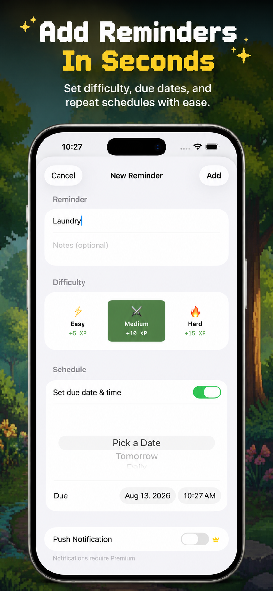
Use the calendar button on Home when a quest belongs at a specific time.
Scheduled quests appear in the Quests tab so you can see what is due today, tomorrow, and beyond.
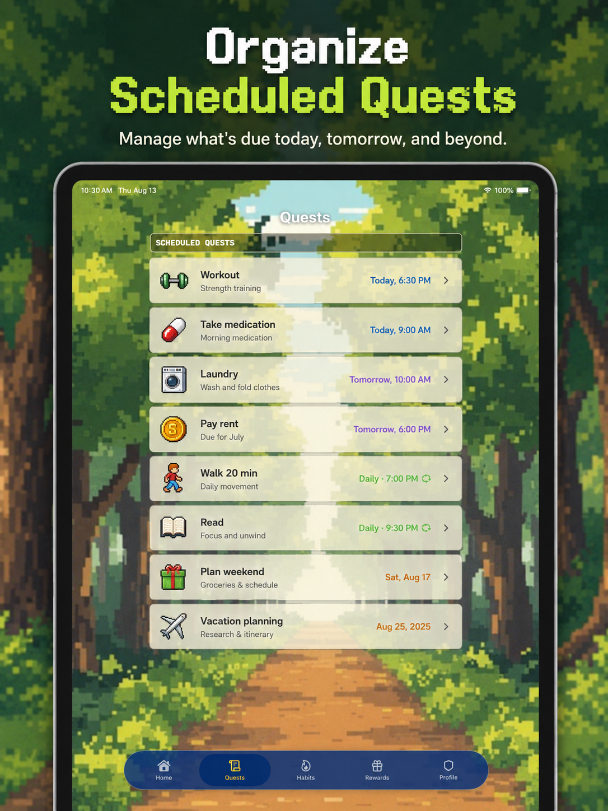
Focus Tools Ready
Start a focus timer, follow the countdown in the app, view it in Live Activities, and use notification actions to keep the quest moving.
Tap its timer control to open Start Focus.
Choose 5, 15, 25, 45, or 60 minutes—or set a custom time. The suggested duration follows the quest difficulty, but you can choose another.
The timer stays tied to that quest and remains visible in the app while you work.
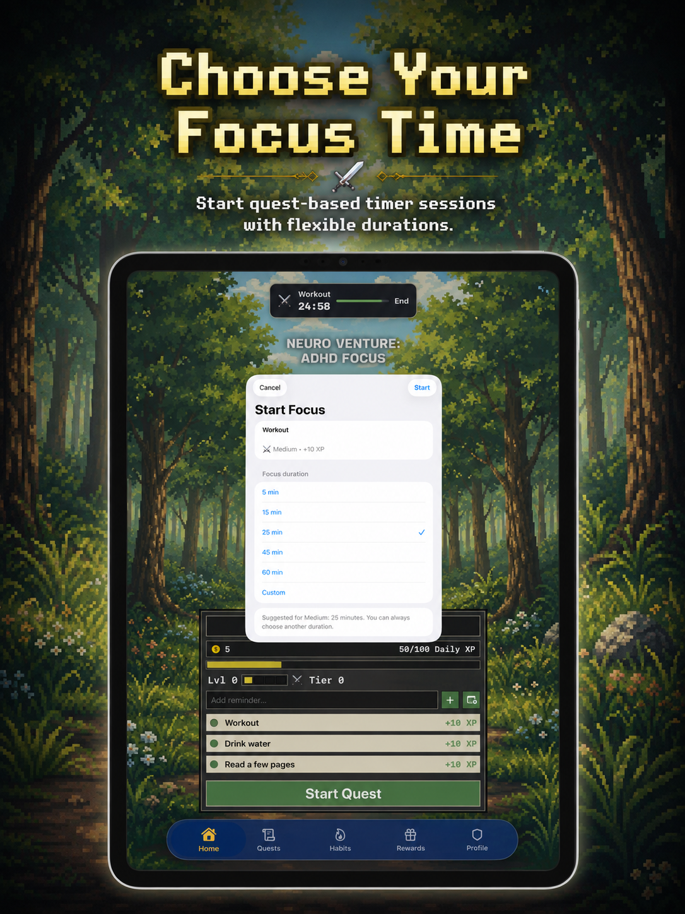
On supported iPhones, an active quest timer appears in the Dynamic Island and as a Live Activity, so the countdown stays visible outside the app.
On iPad, use the in-app countdown and supported Live Activity experience. iPad does not have a Dynamic Island.
Quest reminder notifications offer quick actions to Start Timer, Snooze 10 min, or Complete. When a focus session finishes, its notification lets you complete the linked quest.
Live Activities and Dynamic Island must be allowed by the device and operating system. Dynamic Island requires a supported iPhone model.
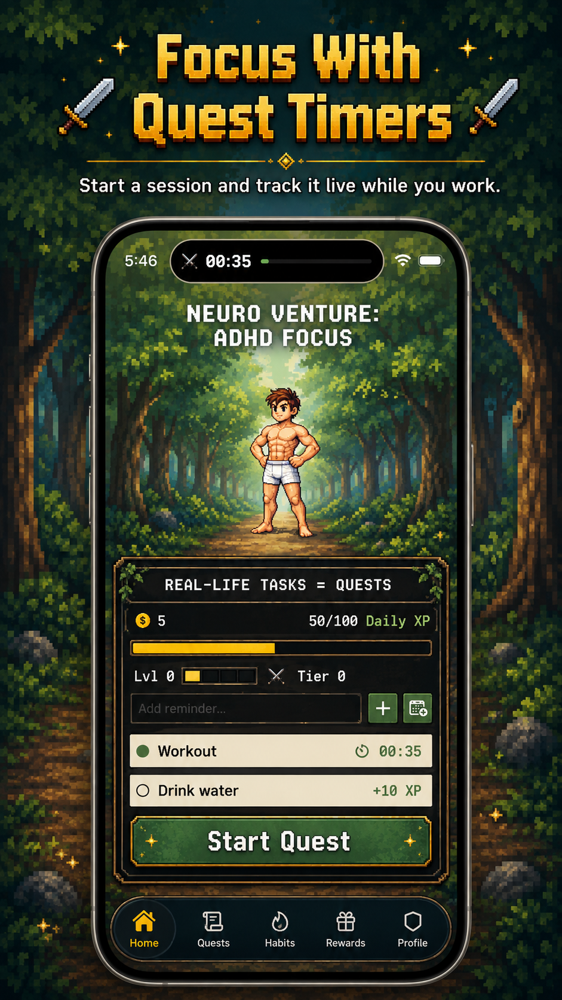
Daily Training
The Habits tab shows today's active quests, your Daily XP Progress, and an archive of completed work.
The bar shows how close your hero is to today's progression cap.
Tap the circle beside a daily quest when you finish it.
Completed quests are grouped by month so your progress is never lost.
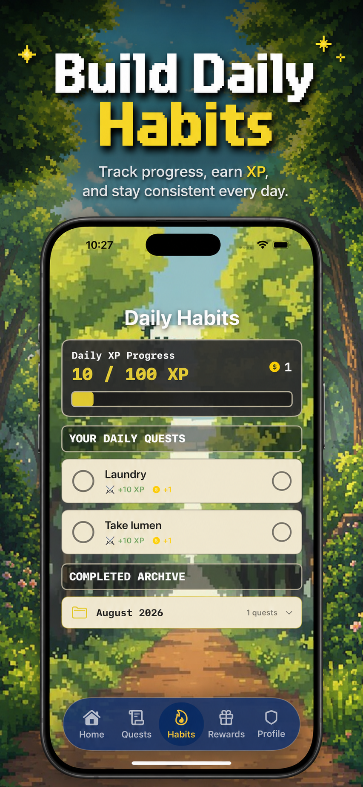
Real-World Quest Data
Connect Apple Health from Profile to let Neuro Venture use supported Health results for real-world quests. Verified Health quest types include Steps, Walking / Running Distance, Workouts / Exercise Activity, and Workout / Exercise Duration.
The existing Health-connected Daily Quest widget remains a Steps example and can show progress such as 4,850 / 6,000 steps.
Health access is optional and controlled by Apple Health permissions. If access is denied or a supported data type is unavailable, Neuro Venture still works without Health-based progress. No other Health data types are currently documented as supported.
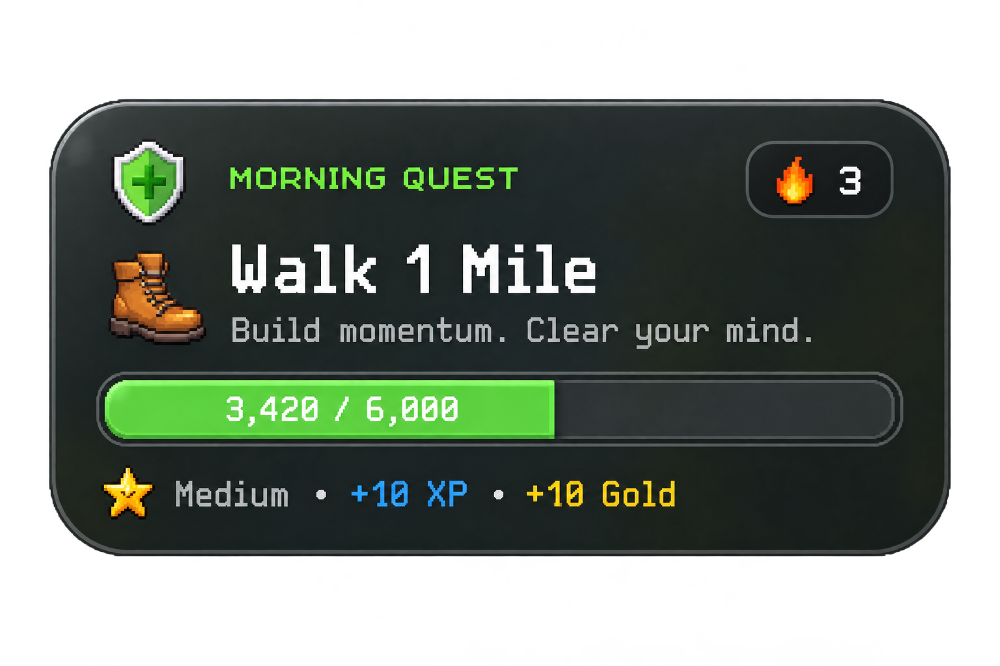
Adventure Currency
XP records your progress and helps your adventurer grow. Complete quests and habits to fill the Daily XP bar.
Gold is Neuro Venture's fictional in-game reward currency. Save it and spend it on available outfits, skins, and other rewards. Gold is not real money, has no cash value, and cannot be purchased.
Remember: Difficulty sets the base reward. Premium status may change the amount shown in the app.
Permanent Upgrade
One-time purchase. No subscription.
Unlock unlimited tasks, notifications and reminders, focus timers, special premium armor, and exclusive familiars.
Free Adventurer: Free users can keep up to 8 active tasks at a time.
Hall of Heroes
Complete at least one quest or habit each day to grow your streak. Your current streak appears on the Home screen. Tap it to see your best streak so far.
Life happens. Spend 40 Gold on a Streak Freeze to protect your streak. You can hold up to 2. If you miss a day, a freeze is used automatically and your streak continues when you complete your next task.
Badges are forever. Once you earn a badge it stays unlocked, even if a streak ends later. Your highest streak badge is displayed next to your hero on the Home screen. Find all 25 badges in Profile → Badges.
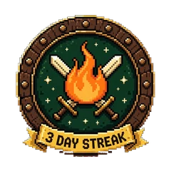
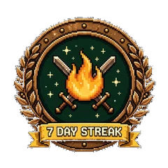
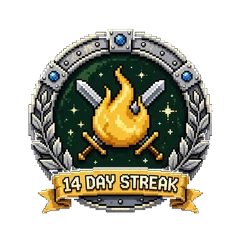
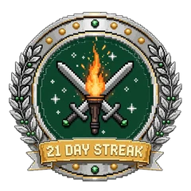
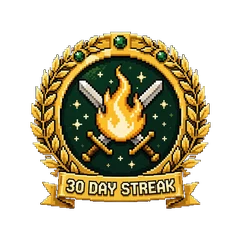
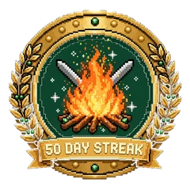
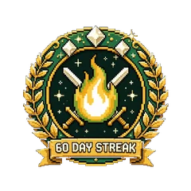
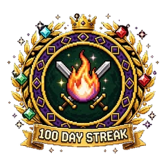
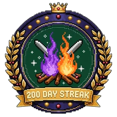
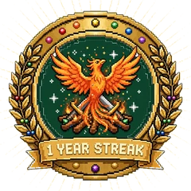
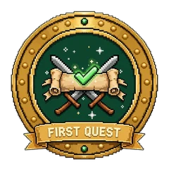
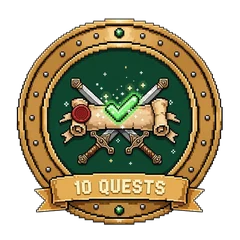
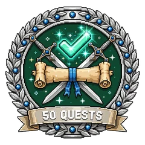
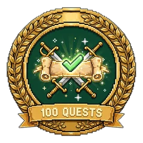
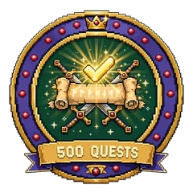
Stamina Warning
Daily Reward Limit Reached
Neuro Venture rewards the first 10 tasks you complete each day. After the 10th rewarded completion, your hero becomes exhausted and additional XP and Gold rewards pause until the next day.
You can still complete tasks while your hero is exhausted. This limit keeps progression balanced and prevents unlimited reward farming. The existing 100 XP daily cap remains part of your Daily XP progress.
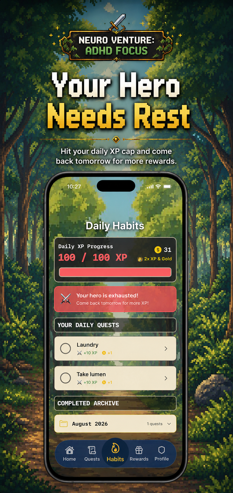
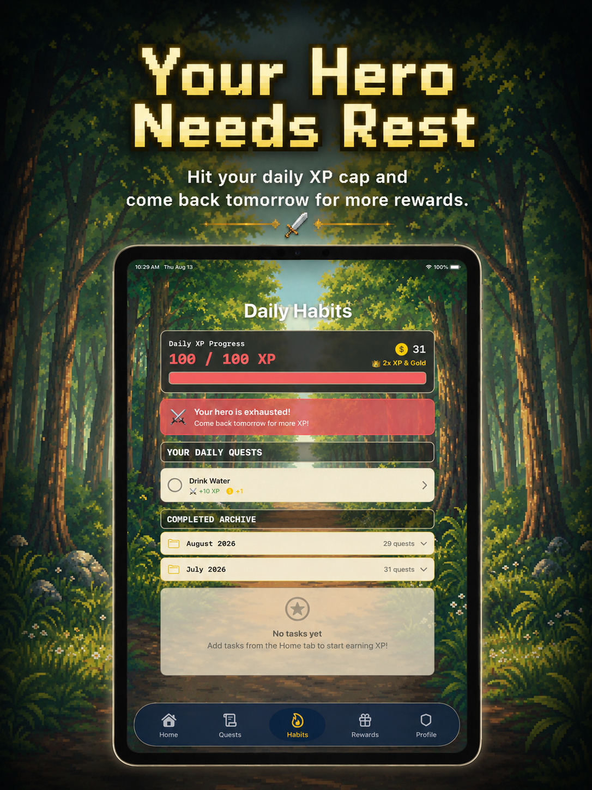
Adventurer Tip: Completing more tasks is still useful after your hero is exhausted. You can keep checking off tasks, but XP and Gold rewards resume the next day.
Treasure Vault
Visit Rewards to see what your adventurer can unlock. Available rewards may include outfits, character skins, pets or familiars, and other journey upgrades.
Your current balance appears near the top of the Rewards screen.
Each reward card shows its Gold cost.
If you have enough Gold, the reward joins your collection.
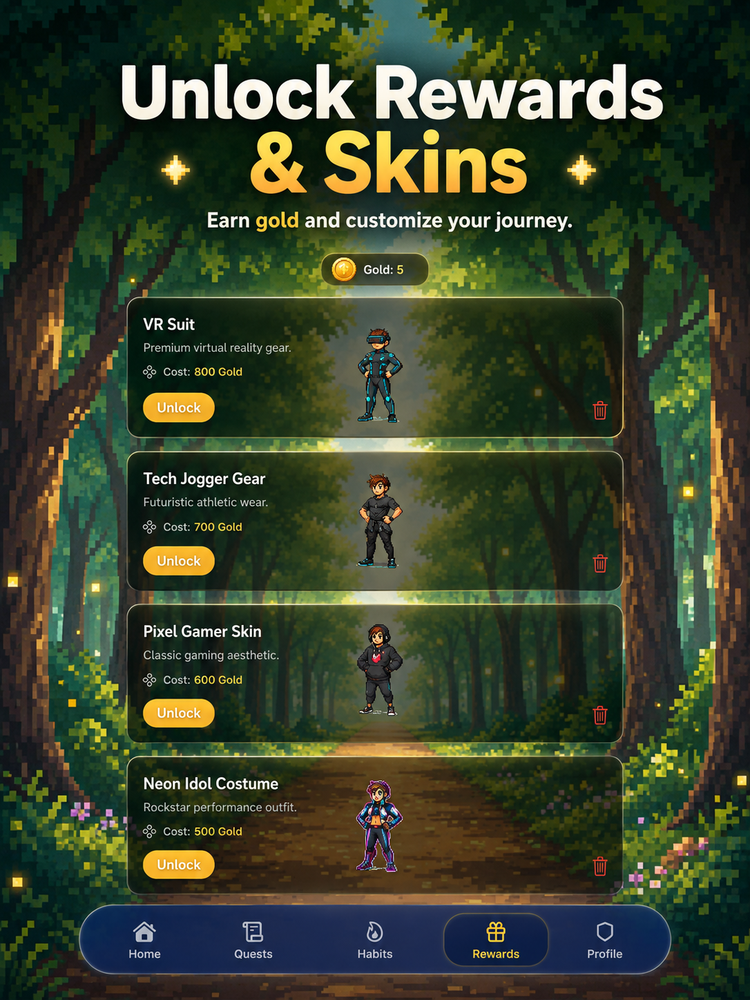
Platform Field Guides
Each guide uses screenshots from that device only, so every instruction matches the layout in your hands.
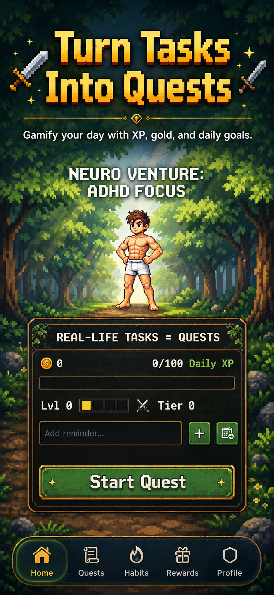
Enter a quick task, tap the plus button, then select Start Quest. The Home panel also shows your Gold, Daily XP, level, and tier.
Use the full reminder screen for notes, difficulty, a due date and time, a repeating schedule, and available notification options.
Start a duration from an active quest, follow its in-app countdown, and keep an eye on the Live Activity or Dynamic Island on supported iPhones.
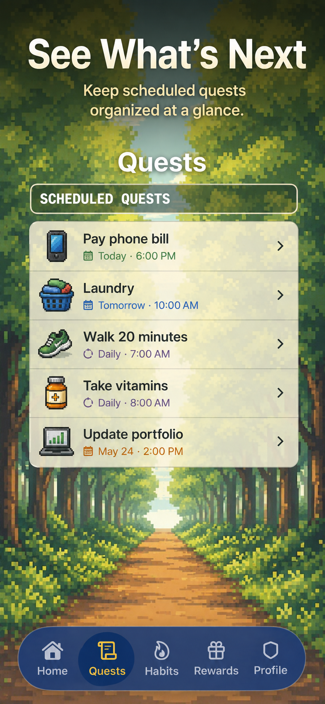
Open Quests to see what is coming next. Dates, times, and repeat schedules appear below each quest.
Complete today's habits, watch Daily XP rise, and open the monthly archive when you want to review past victories.
After your 10th rewarded task completion of the day, the exhaustion warning appears. You can keep completing tasks, but XP and Gold rewards resume the next day.
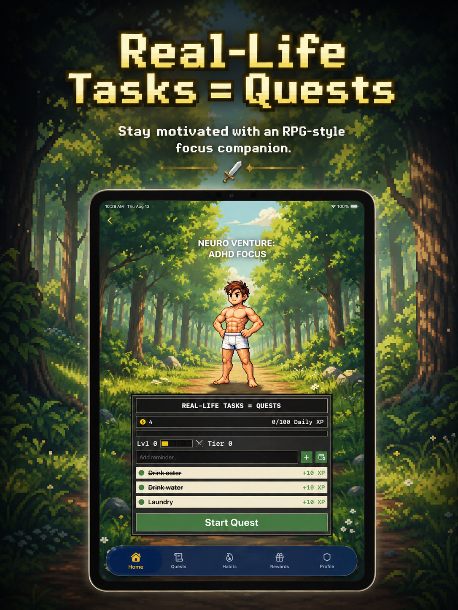
Choose your task, add it to the panel, and start the quest from the spacious iPad Home layout.
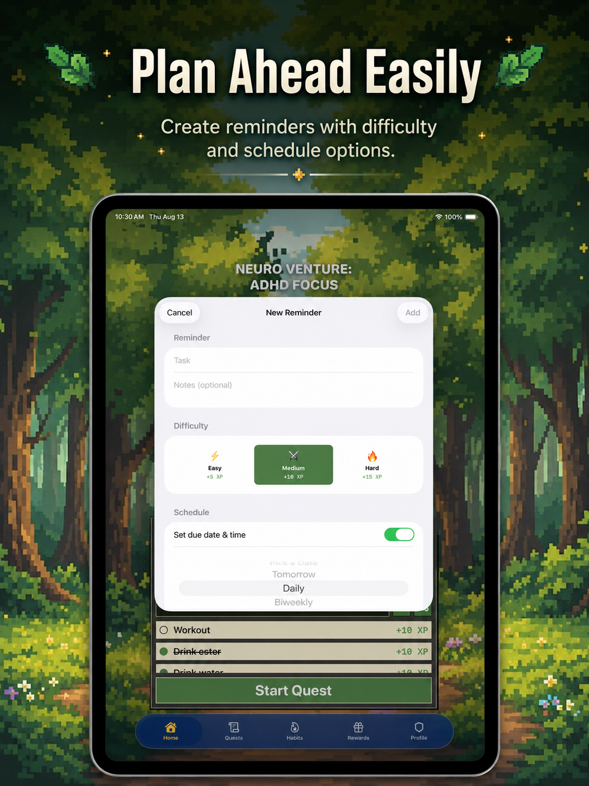
Add details, choose a difficulty, and set a schedule using the iPad reminder sheet.
Select a suggested or custom duration, then follow the in-app countdown and supported Live Activity. iPad does not use Dynamic Island.
The wider quest log keeps names, notes, and due times visible at a glance.
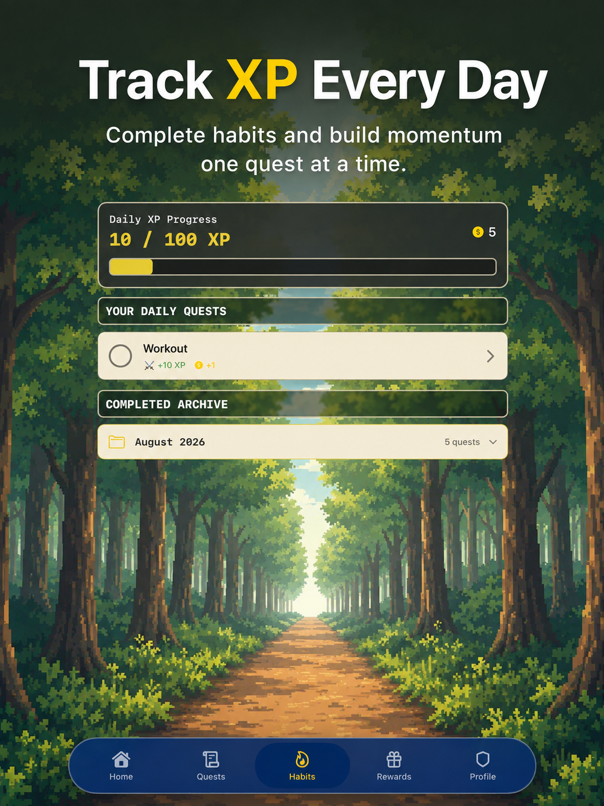
Use Daily XP Progress to follow momentum, complete habits, and review the completed archive.
The iPad shows the same exhaustion status after 10 rewarded completions. You can keep completing tasks, while XP and Gold rewards return the next day.
Compare reward costs, choose your next goal, and spend saved Gold when you are ready.
Wisdom from the Trail
“Put one shirt away” is a valid quest. Small steps build momentum.
Pick difficulty based on how the task feels for you today.
Give alerts only to quests that truly need a time, so important reminders stand out.
The goal is steady progress—not a perfect quest log every day.
Help from the Guild
Your hero may already have earned rewards from 10 completed tasks today. After the 10th rewarded completion, XP and Gold pause until the next day, but you can still complete tasks.
Your hero earns rewards from up to 10 completed tasks per day. After the 10th rewarded completion, exhaustion begins to keep progression balanced. This is separate from the Free plan capacity of 8 active tasks.
Free users can have up to 8 active tasks at one time. This is a capacity limit. Hero Exhaustion is different: it begins after 10 rewarded task completions in a day.
Premium is a $4.99 lifetime one-time purchase that unlocks additional productivity features and premium game content, including multiple focus timers, the full widget collection, 2× XP and Gold, expanded notifications, special armor and outfits, and exclusive familiars.
Open the full Add Reminder screen and choose Easy, Medium, or Hard before adding the quest.
Tap the calendar button on Home, turn on Set due date & time, then select the date, time, and optional repeat schedule.
Allow notifications in iOS Settings and enable the notification option when scheduling an eligible quest. Notification features may require Premium.
Press and hold the quest reminder notification to reveal its actions, then choose Snooze 10 min. Notification presentation can vary by iOS or iPadOS version and device settings.
Open an active quest and tap its timer control. Choose a suggested duration or Custom, then tap Start. The countdown remains tied to that quest.
Touch and hold the Home Screen, open Add Widget, search for Neuro Venture, choose Small or Medium, and place it on your Home Screen.
Open Neuro Venture to publish the newest quest snapshot. Widget refresh timing is also managed by iOS or iPadOS, so changes may not appear immediately.
Not yet. However, Neuro Venture notifications may still appear on your Apple Watch through iPhone notification mirroring. A dedicated Apple Watch app is not currently required for mirrored notifications.
Open Profile, choose Connect Apple Health, and allow access to the supported types you want to use: Steps, Walking / Running Distance, Workouts / Exercise Activity, and Workout / Exercise Duration. Apple Health controls each permission.
Check that Apple Health access is enabled for the data type used by the quest and that Apple Health has a matching result. If permission is denied or that data is unavailable, Neuro Venture still works without Health-based progress.
Dynamic Island requires a supported iPhone, an active focus session, and Live Activities enabled in device settings. On iPad, use the in-app countdown and supported Live Activity experience instead; iPad does not have Dynamic Island.
Not yet. Neuro Venture currently supports Portrait orientation only on iPad. Landscape support is planned for a future update.
Support Camp
Have a question, an idea, or a problem with your adventure? Send a message from your preferred mail app.